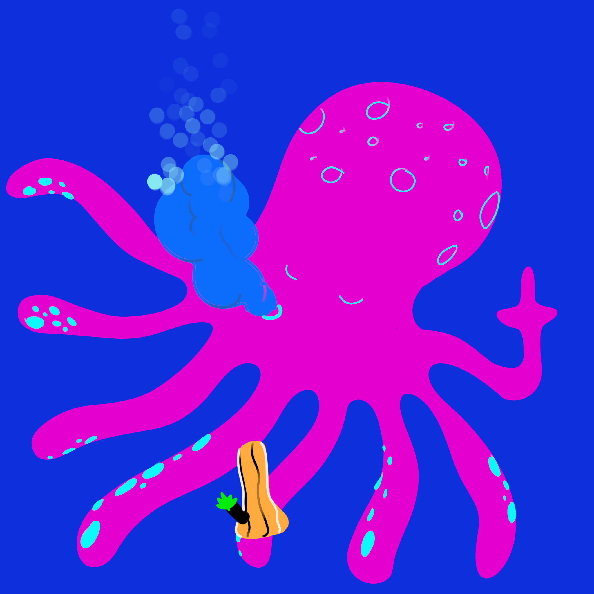
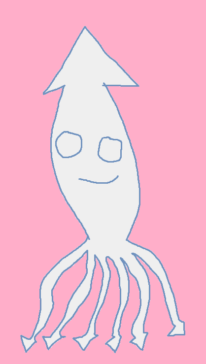

That's right bitches. It's Cephalopod time.


I fucking love cephalopods. They are so fucking dope I can't even fucking begin to tell you about them. I obviously haven't done my research, however, they're still really dope and I made this page to show off my love for those tentacle fuckers.
Check out our gallery of cephalopods!
Reasons why I like Cephalopods
- They have a lot of tentacles uwu
- Their heads are funny shaped. All of them.
- They do be chillin tho
- They smart af bruh I saw an octopus get itself out of a jar once.
- Cephalopod
- Tentacle grip
- Suction cups on they arms
- Some even play the clarinet
Reasons why I dislike Cephalopods
- None